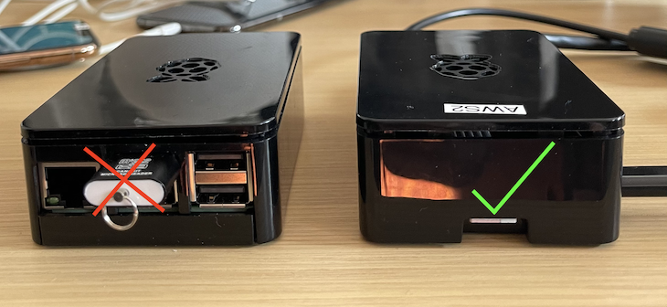

Raspberry Pi Setup Guide¶
This guide gets you started on setting up a Raspberry Pi to run an ADK application. Before you get started, please make sure to go through Getting started with ADK to set up your development environment.
Hardware Required¶
Raspberry Pi 3B+ or Raspberry Pi 4
USBC → Ethernet Adaptor or USB → Ethernet Adaptor
Setup Instructions¶
To use Raspberry Pi you must setup an SD card first with a Raspberry Pi OS image along with additional dependencies required by the ADK.
Open Terminal and change directory into the
ADK/Toolsdirectory:cd ADK/ToolsRun the following shell command to begin the Raspberry Pi SD card setup process
./raspi_sdcard_setup.sh
Insert the MicroSD card into the MicroSD reader and plug it into your Mac and hit Return.
You will see an output of disk targets. Type in the SD card drive number. In the example below, it would be
/dev/disk2.================================================================================ /dev/disk0 (internal, physical): #: TYPE NAME SIZE IDENTIFIER 0: GUID_partition_scheme *248.9 GB disk0 1: EFI EFI 314.6 MB disk0s1 2: Apple_APFS Container disk1 247.5 GB disk0s2 3: Apple_KernelCoreDump 1.1 GB disk0s3 /dev/disk1 (synthesized): #: TYPE NAME SIZE IDENTIFIER 0: APFS Container Scheme - +247.5 GB disk1 Physical Store disk0s2 1: APFS Volume 19G73 13.9 GB disk1s1 2: APFS Volume 19G73 - Data 17.4 GB disk1s2 3: APFS Volume Preboot 81.9 MB disk1s3 4: APFS Volume Recovery 542.1 MB disk1s4 5: APFS Volume VM 2.1 GB disk1s5 /dev/disk2 (external, physical): #: TYPE NAME SIZE IDENTIFIER 0: FDisk_partition_scheme *32.0 GB disk2 1: Windows_FAT_32 CANAKIT 32.0 GB disk2s1 ================================================================================ Please type in Raspberry Pi SD card device name, or press enter to refresh disk list. /dev/disk2
Enter
ywhen asked if you want to erase the disk. Authenticate to begin flashing the image to the SD card.Erase this disk: `/dev/disk2`? [y/N]y ============================================================== + diskutil unmountDisk /dev/disk2 Unmount of all volumes on disk2 was successful + sudo diskutil eraseDisk FAT32 RASPBIAN MBRFormat /dev/disk2 Password: Started erase on disk2
When prompted, remove the SD card from your Mac, insert the SD card into your Raspberry Pi.
Expand to see Raspberry Pi SD card slot 
You would need to connect your Raspberry Pi to your mac using ethernet cable before you proceed. Following instructions to connect Raspberry Pi to mac using internet sharing. Once the ethernet cable is plugged into the Raspberry Pi and connected to your Mac, hit Return. This will start running configuration scripts.
Following are the default configurations unless changed during setup:
Wi-Fi Country Code:
USHost name:
raspberrypiUser name:
piPassword:
raspberry
BLE Setup¶
BLE support on Raspberry Pi is optional and is only required if using Raspberry Pi as a BLE HomeKit accessory.
Expand to follow instructions to setup BLE
By default, the BlueZ stack on Raspberry Pi is not compatible with HomeKit. A script is available for MFi partners to address the HomeKit compatibility issues with Raspberry Pi bluetooth stack.
Run the following on your development machine to address these issues with the bluetooth stack on Raspberry Pi:
./Tools/raspi_bluez_install.py -n raspberrypi -p <password>
Important
Each time Raspberry Pi is rebooted, you have to restart bluetooth service. This seems to be related to a known issue: https://github.com/RPi-Distro/pi-bluetooth/issues/8. The problem will affect pairing the Raspberry Pi accessory with Home Application.
Following command can be run on Raspberry Pi to restart bluetooth stack after every reboot:
sudo systemctl restart bluetooth
Troubleshooting¶
Change the default country code
The default image uses US for wifi country code. If you need to change this, you can do so by logging into the
Raspberry Pi using the command below.
sudo raspi-config
Setup Wi-Fi
Run command sudo raspi-config and then go to network options > Wi-fi and enter SSID and password. Refer to
Setting up a wireless LAN via CLI
for more details.
sudo raspi-config
Change Timezone
To set the local time zone on Raspberry Pi to match your current time zone, do the following:
ssh to the raspberry pi
run
sudo raspi-configSelect Localization Options
Select Change Timezone
Select your timezone to match your other devices
Example: if you are in Cupertino or America-Pacific timezone, select America then Los Angeles
Select Finish